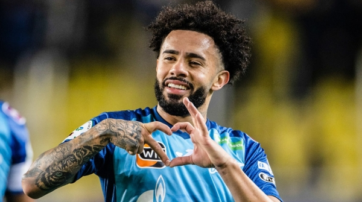

Tudo sobre o mais querido do mundo, o rubro negro nunca para.
Cebolinha se recupera de lesão
Além do retorno dos uruguaios que estão na Copa América🏆, o Flamengo terá outro reforço interno para enfrentar o Criciúma no próximo dia 20, às 16h (de Brasília), no Mané Garrincha🏟️ Everton Cebolinha. Titular absoluto do time em 2024, o atacante ficou fora dos últimos seis jogos por causa de uma lesão no quadril. Ele se contundiu na vitória por 2 a 1 sobre o Bahia no dia 20 de junho.
Flamengo avança por Claudinho
A negociação entre Flamengo e Zenit 🇷🇺 por Claudinho avançou nos últimos dias. Depois de fazer uma proposta de 15 milhões de euros (R$ 89,1 milhões), mesmo valor que o clube russo recusou ano passado, as partes enfim estão próximas de um acordo em torno de 18 milhões de euros (R$ 106,9 milhões). Internamente, o clima é de otimismo.

Melhores momento da vitoria sobre o Atletico Mineiro